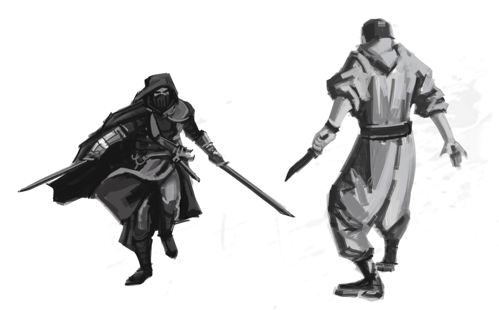

Le manuel du jeu propose un imbroglio nommé Interrogatoire :
Les Manteaux Bleus capturent l'un des PJ pour l'interroger sur les crimes de la bande. [...] Les crapules comme vous passent leur temps à entrer et sortir de prison, à être interrogés et harcelés par les forces de l'ordre. Ce n'est pas la fin du monde. Mais maintenant que vous êtes ici dans la salle d'interrogatoire, quel genre de personne êtes-vous ? Est-ce que vous parlez ? Leur tenez-vous tête ? Est-ce que vous passez un marché ?
Cette aide de jeu vous propose de développer ces scènes d'interrogatoire, pour en faire des moments cruciaux, où les PJs sont mis sous pression par les Inspecteurs, où ils ont beaucoup à perdre, et où la situation se résoudra par des moments de roleplay mémorables.
Avertissement : le parti-pris ici est de placer les joueurs dans des conditions proches de celles d'un véritable interrogatoire de police, et de générer un véritable stress chez eux. Certains joueurs n'apprécient pas du tout de jouer de telles scènes, n'employez donc cette aide de jeu qu'après les avoir consultés, et si cette proposition ludique leur convient.
Une scène d'interrogatoire peut constituer une excellente séquence d'ouverture d'une session de jeu. En tant que MJ, savoir à l'avance quel PJ sera interrogé est très pratique, et vous permettra de préparer cette scène avant la partie. Il est aussi possible de dérouler une telle séquence en cours de partie, si l'occasion se présente et que vous vous sentez capable de tout improviser.
Idéalement, un PJ peut avoir été arrêté par les Manteaux Bleus au terme de la session précédente. Si cette situation ne se présente pas spontannément, voici quelques manières d'amener l'interrogatoire d'un PJ :
Afin de créer de la tension dramatique autour de la table, mieux vaut préparer l'interrogatoire, pour déstabiliser les joueurs et donner lieu à quelques beaux moments d'improvisation théatrale.
Un certain nombre de conséquences négatives peuvent découler de cet interrogatoire :
Mais surtout, en cuisinant le PJ, les Manteaux Bleus pourraient obtenir de lui de précieuses informations. Listez sur une feuille de papier, avant l'interrogatoire, ce que les forces de l'ordre pourraient découvrir selon les événements précédents de votre campagne en cours :
Cette liste vous servira à orienter l'interrogatoire, pour essayer d'obtenir des informations du PJ interrogé, voir de le pousser à se trahir ou à trahir ses complices.

Les Inspecteurs sont des gendarmes d'élite. Ils sont souvent issus des familles d'ambassadeurs Akorosi à l'étranger, et ont été entraînés dans l'armée impériale. Ce sont à la fois de redoutables combattants, et des limiers hors pair. Ils sont entraînés à détecter les mensonges et, sans en abuser, vous pouvez employer cette capacité spéciale pour parfois justifier qu'un Inspecteur devine lorsqu'un PJ déguise la vérité.
Les Inspecteurs adopteront différents masques pour faire parler les suspects : apparaissant tantôt débonnaires et sympathiques, ils n'auront aucune difficulté à devenir inquisiteurs, inflexibles, menaçants.
Durant l'interrogatoire, le MJ incarne l'Inspecteur principal, en charge de mener l'enquête impliquant les PJs. Il possède déjà un dossier très complet sur un ou plusieurs PJs, incluant leurs activités connues, leurs antécédents judiciaires, et quelques éléments de profil psychologique.
C'est facultatif, mais pour éviter l'effet « spectateurs passifs », nous vous recommandons d'impliquer un autre joueur dans l'interrogatoire, en lui donnant temporairement le rôle d'un second Inspecteur, binôme de l'Inspecteur principal. Son rôle est décrit en détails en appendice, sur un feuillet à remettre au joueur comme guide d'interprétation. En bref, selon une stratégie « bon flic, méchant flic », sont rôle sera d'être le méchant flic.
Issues du code pénal de Doskvol :
Afin d'obtenir les informations qu'il recherchent, en plus des bâtiments et des Manteaux Bleus à leur disposition, les Inspecteurs disposent des outils judiciaires traditionnels :
À Doskvol, les Inspecteurs disposent aussi d'autres outils :


Le PJ suspect est en lien avec un ou plusieurs crimes, et il a été mentionné par des témoins ou des victimes. Listez sur une feuille de papier ce que les Inspecteurs savent ou soupçonnent déjà du PJ interrogé :
Cette dernière liste de traces, en particulier, constituera la matière principale des Inspecteurs pour essayer de piéger le PJ suspect, et lui soutirer des informations en le mettant face à ces contradictions.
Lorsque le PJ ciblé est arrêté pour être interrogé, il sera amené à un poste du Guet de la Ville à proximité. C'est l'occasion de fournir à vos joueurs une description des lieux qui rende compte du sentiment d'oppression qu'il dégage. Vous pouvez lire celle proposée ci-dessous, ou vous en inspirer pour concevoir votre propre décor.
Les Manteaux Bleux te mènent à travers la ville jusqu'à une caserne proche : devant toi se dresse un grand édifice de pierre, amoncellement de plusieurs bâtiments accolés. Le lieu semble être un ancien poste de douane fluvial, et se prolonge avec trois arches d'un pont en partie effondré, mais toujours employé par le Guet pour amarer plusieurs embarcations.
Plusieurs gardes patrouillent sur les courtines de la caserne, arbalète à la main. Toutes les fenêtres comportent des barreaux d'acier, et une herse est relevée à ton entrée dans la cour intérieure. Dans l'enceinte de la caserne, les Manteaux Bleus te dévisagent d'un air sévère. Une fois la herse redescendue derrière toi, ils te fouillent et déposent toutes tes possessions dans un grand sac en toile de jutte.
Tu es ensuite mené à travers un dédale de petits couloirs jusqu'à une cellule, où l'on te demande d'attendre avant l'interrogatoire, sans te préciser combien de temps. L'endroit est exigu, pue la pisse, et tu distingues des tâches de sang sur l'épais mur de grès. Dans une cellule proche, un homme est prostré dans un coin, et sanglotte en marmonnant de manière incompréhensible. Il semble avoir regressé au comportement d'un animal harassé, et gronde lorque tu croises son regard.
Si le PJ est venu au poste contre son gré, par exemple car il a été pris en flag, il est entravé par des menottes dans le dos, attachées par une chaîne au sol.
xxx TODO
xxx TODO
À ce moment, indiquez aux joueurs que vous allez jouer une séquence de pur _roleplay, en temps réel sans interruption ni apparté, et que pour créer une ambiance immersive, les commentaires hors-jeu sont à éviter jusqu'à la fin de la scène.
Privations d'alimentation et de sommeil Tortures ? Avec emploi d'Essence Vitale / Potion de Vitalité pour soigner, et de la Poudre de Noyade
L'interrogatoire peut se terminer de plusieurs façons :
le PJ peut être libéré : soit il a réussi à bluffer les Manteaux Bleus, soit ceux-ci préfèrent simplement le laisser partir pour qu'il ne se doute de rien, et préparer une descente plus ambitieuse, plus tard.
le PJ peut être mis en accusation, et placé en détention jusqu'à son jugement, si suffisament d'éléments incriminants sont établis par les forces de l'ordre. Un Coup sera alors nécessaire pour le faire évader.
le PJ peut décider de tenter de s'enfuir : réalisez alors un jet d'Action. Selon la manière dont il s'y prend et le résultat du jet, le PJ peut alors se retrouver dans une course-poursuite à travers le poste de guet des Manteaux Bleus. À l'inverse, des complications peuvent survenir, comme son arrestation pour motif de voie de fait contre un agent de la paix. L'interrogatoire peut alors se poursuivre de manière plus musclée, ou bien le PJ peut directement être incarcéré en prison.
le PJ peut tenter de gagner du temps, et d'alerter le reste de sa bande afin qu'elle le fasse s'évader, par la force ou par la ruse. À nouveau, tout cela peut se résoudre par des jets d'Action.
Dès la description des lieux, les joueurs peuvent avoir envie de mettre les voiles, ce qui pourrait ruiner votre intention de mettre en scène un interrogatoire... C'est une autre bonne raison de jouer cartes sur table avec eux en amont, en leur partageant votre intention de jouer une scène de ce type, et s'ils évoquent cette envie d'évasion, en suggérant d'attendre jusqu'au premier entretien avec les Inspecteurs.
Quelle que soit la clôture de cette scène, les joueurs pourront avoir l'impression que l'affaire est close, et même si l'interrogatoire était intense, que ses répercussions sont minimes...
Mais pour le MJ, les informations récoltées par les Manteaux Bleus constituent un terreau fertile pour de futures menaces. Consignez par écrit ce que les forces de l'ordre ont appris, et déterminez comment elles vont les exploiter, en définissant de nouveaux compteurs de progression d'événements à venir :
Selon votre style de jeu, vous conservez ces compteurs cachés, où les rendre leurs titres publics, sans révêler plus de détails...
xxx TODO
Useful ?
Useful ?
Useful ?


Merci aux auteurs du Petit manuel d'autodéfense en interrogatoire, aux éditions du commun, qui m'a servi d'inspiration pour cette aide de jeu.
Merci à Elliot Jolivet aka Tenseï pour les illustrations employés dans cette aide de jeu, qu'il a réalisé spécialement pour Blades in the Dark. Vous pouvez retrouvez quelques autres illustrations qu'il a réalisé sur le thread Reddit /bladesinthedark.
L'illustration de la Coquille automate provient de la collection 108 Terrible Character Portraits de Jeff Preston - CC BY 3.0.
Les illustrations de ville proviennent de tableaux du parcours Histoire d'Angers de son musée des Beaux-Arts.
Merci enfin aux développeurs des logiciels libres employés pour réaliser cette aide de jeu : le navigateur Firefox, le logiciel de dessin Gimp, l'éditeur de texte Notepad++, le lecteur de PDF Sumatra PDF, le language de programmation Python et les bibliothèques de code mistletoe & weasyprint.

Cette aide de jeu de Lucas Cimon est placée sous licence Creative Commons Attribution-NonCommercial 4.0 International.
Les fichiers sources ayant permis de générer ce PDF sont disponibles sur GitHub. Version : 1.0
Cette aide de jeu est diffusée à prix libre. Si vous souhaitez soutenir mes projets, vous pouvez me faire un don sur lucas-c.itch.io.
Je serais ravi d'avoir vos retours sur cette aide de jeu si vous l'employez. Racontez-moi comment s'est passée votre partie via un commentaire lucas-c.itch.io ou sur mon blog.